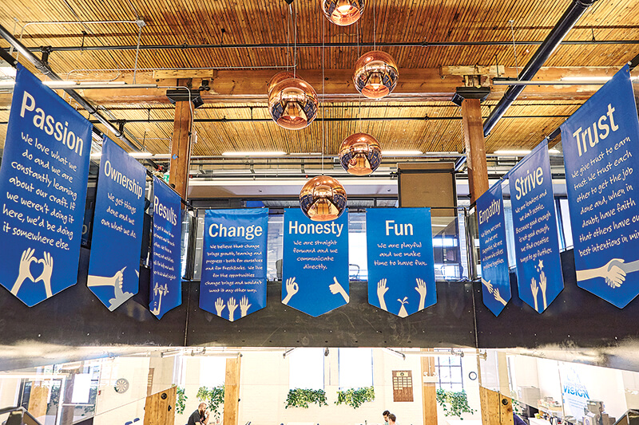
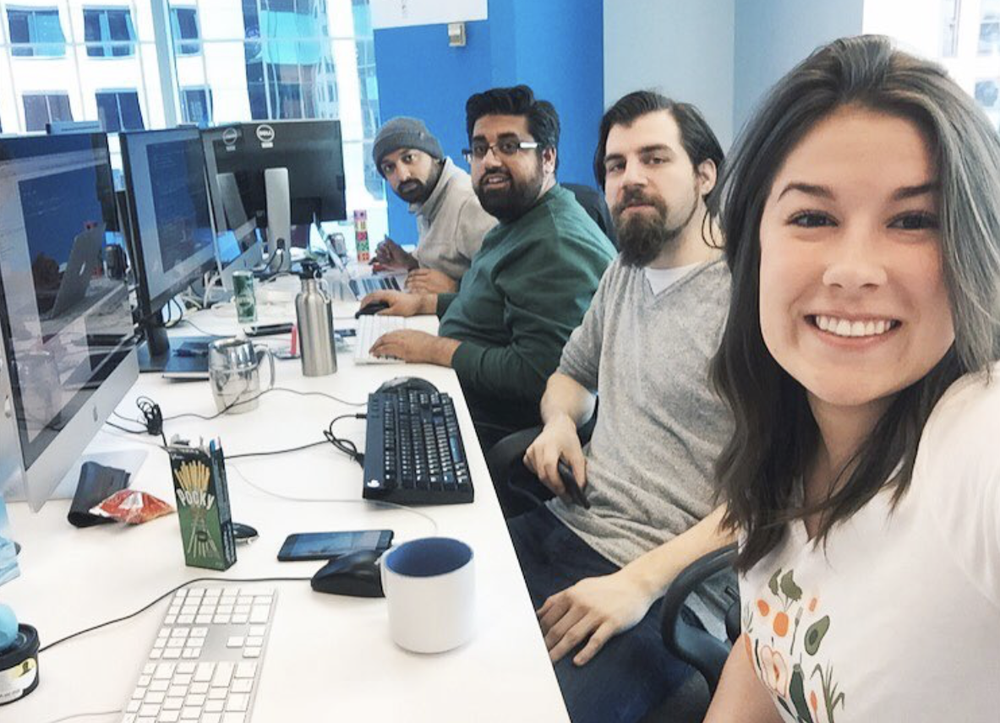
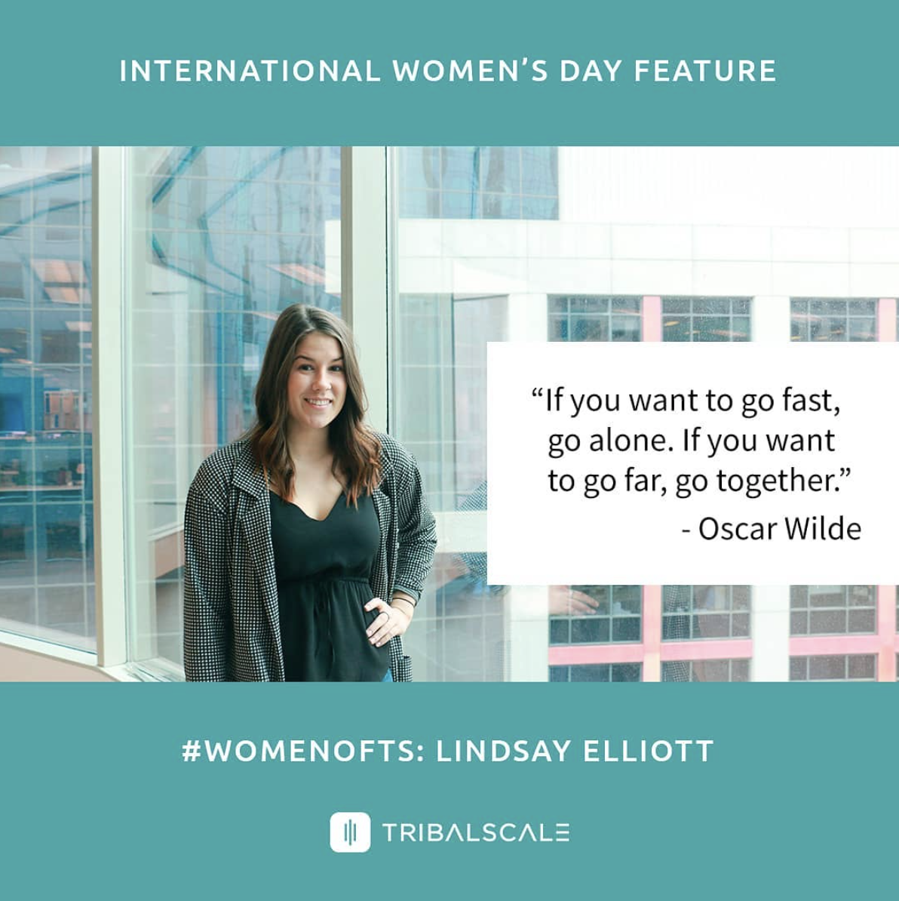
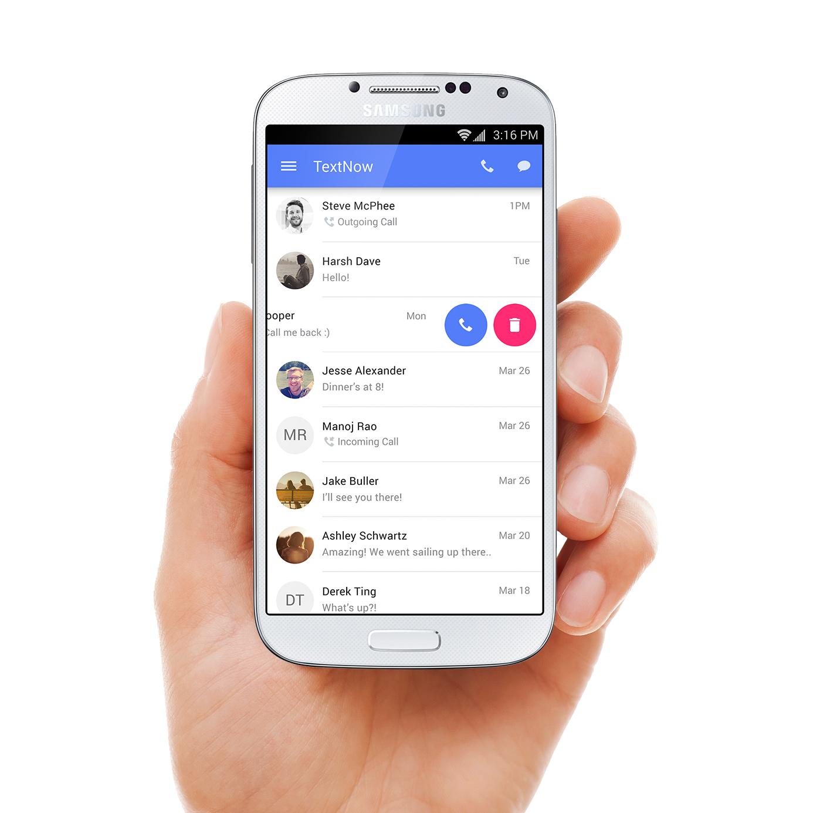

Welcome!
Hi I'm Lindsay, I am a 4th year Computer Science student at the University of Guelph. On top of that I am working towards a minor in Mathematics. Along with my studies I am a Teaching Assistant for my school's first year programming class. I am currently on the search for my 5th and final co-op placement.
Life away from the computer includes yoga, reading, hiking, and adventure. I like to think I have an optimistic and enthusiatic personality paired with a terrible sense of humor.
The purpose of this website is to share my experience with others. Enjoy.
Why are you in co-op?
I grew up in a very small town in southwestern Ontario. So small that there are very few opportunities as far as technology jobs are concerned. Without being in a co-op program I honestly think it would be very hard to me to get my foot in the door and get some of the jobs that I get. The co-op program has made me confident in my skills and excited to graduate because I know that there are places out there for me that are my ideal workplace. Throughout my several co-ops I have worked in Cambridge, Toronto (twice), and Waterloo. These have all been great experiences and even though I still have another year left of my education I know I am going to feel ready at the end of the road and I am making sure not to rush the process along the way.
Why are you good at what you do?
I am good at what I do because I try my best to add life to the office each and everyday. I love making people laugh and encouraging people to be their best weird self they can be. The more comfortable I get around other people, the more weird and more myself I am. This makes for a much better experience for everyone in the office. I am not afraid to be vulnerable and ask questions because it is just like me asking a friend questions. My philosophy is to laugh and learn.
About Jomar
My 1st and 2nd work terms were at Jomar Softcorp Internationl in Cambridge, Ontario as a Junior Programmer. Jomar Softcorp Internation is a company that programs software solutions for many different platforms such as utilities, warehouse inventory, insurance, and police services. My placement was at the Head Office in Cambridge Ontario, however they have 2 additional offices in Vacouver, British Columbia and Charolette, North Carolina.
8 Months as a Junior Programmer
My work was based on modifications and additions made to the many number of applications created at Jomar. These modifications could take hours, days, or sometimes weeks. I would be involved in the entire process of that modicfication including the initial review, the implementation, and the testing.
The majority of my work was on the Utilities system, which was great in many ways. The first obviously getting to know how utility meters and how that whole system operates. Another good thing was getting comfortable with the code and database of 1 system so that I could go learn more complex things about that system instead of only touching the surface on many systems. The third good reason that I like to consider myself a Utility Meter specialist is that you work with the same people for 40 hours a weeks so you get to know them better, and they also hold you to a higher standard and give you more responsibility. As a co op student we know we are at the bottom, but it is our job to try our hardest to not finish with the feeling that we are still on the bottom.
Worked with: SQL, XML, XSL, Java, Javascript, HTML, CSS, Shell Scripts, Batch Files, Database Utilities and Reports
Goals
Did you have any goals for this work term?
Most of my goals for this work term were based upon social, professional, and personal development.
When I compare the goals I set for the first and second half of my work term they are very different. The main concern of my first work term was fitting in, learning the ways of the office, trying to keep up. The goals I set for the second half of my workterm were based around improving my workplace and enhancing my environment. I guess what I mean by that is helping the new co ops with simple things so that the people that trained me didn't have to repeat themselves so much.
Did you develop any goals relating to your job tasks?

Goals relating to my job taks included things like bring more independent, taking initiative, helping the new co op students that came at my 4 month mark, andlearning more about the company and not just the code.
What skills did you want to learn?
When it came to learning new skills I new that I was going to get a lot more familiar with code no matter what, but learning how each piece of the puzzle fit together was something I was really interested in being apart of. One of the main differences between the Computer Science and Software Engineering prograns.
What technologies did you want to work with and why?
Databases are everywhere, the more you know about them the better because I know they will follow me everywhere I go. Before working at Jomar I only knew the bare minimum when it came to databases. After completing an 8 month work term I can confidently say I am very comfortable working with databases and what they have to offer.
About Freshbooks

Freshbooks is a cloud based accounting software company that has been around for over 10 years. They recently released a completely new platform of their entire application, this included a smoother backend, efficiency and sustainability adjustments, and of course a major face lift.
The culture at Freshbooks is something I had never experienced before. The staircase heading downstairs held up all the "values" that Freshbooks held every employee to. The first letter of all of these values spelt out PORCHFEST (Passion, Ownership, Results, Change, Honesty, Fun, Empathy, Strive, Trust), this the name for the weekend retreat that takes place up in Muskoka every summer. I had the opportunity to go this year, I had the time of my life.
Summary of my 4 Months
The first 2 weeks or so were full of learning, setup, and getting comfortable with the code-base. Even though I was still very very new to Freshbooks I felt part of the team. They gave me small bugs to work on in between my training sessions with the other co-ops and I pushed code out to production as early as the first week. Around this time I also had meeting with my 'Freshbuddy' to talk about things I was interested in and determine how I would make the most out of my 4 months at Freshbooks.
The first major task I took on was refactoring the codebase we use to send all of our emails out. This service was called Newman and I became very comfortable with it by the end of my 4 months. Fun Fact: I finished my work term as the 7th highest contributor on Github for this particular repository. This could be due to the fact that my next major contribution was replacing one of our 3rd party emailing vendors. This involved research, comparison, talking with the vendor, implementation, and testing of the entire process. The final main contribution I had over my 4 month work term was joining the team in creating extensive tests of our Journal Entry code. This meant creating tests for every transaction we could possible conjure up to ensure that the journal entries are being created the right way.
Leaving Freshbooks at the end of the summer was so bittersweet. Now that I am starting back up at school I am motivated to power through these next 2 years to the best of my ability so that I can continue to grow and develop as a developer. Yes, I am aware that was cheesy.
Influence on my Future
This summer has been more than just a great learning experience when it comes to the work I could potentially be doing in the future. The culture of Freshbooks could not excite me more, it is probably the thing I am going to miss the most. I am a women pursuing a career in the technology industry, it does not take much for me to feel out of place and have minor 'imposter syndrome'. I have always felt like I stuck out like a sore thumb in my program and workplace, this was not the case at Freshbooks. Not only was I welcome as a co-op student, my gender was never a topic of conversation.
Working at a place like Freshbooks excites me to wrap up this degree and find one of the many places that have a similar culture and that I know I love to work at. This summer has been just as much motivating as it has been rewarding. Ending my current work term at Freshbooks is so bittersweet and it only makes me want to work even harder. It is hard to top a place like Freshbooks in term of quality of work term, if I want to attempt to do that I know that I need to be at the top of my game at all times and that is thanks to Freshbooks.
Goals
Did you have any goals for this work term?
The entire concept of having goals to work towards each term was not a foreign concept to Freshbooks. I was fortunate to be able to sit down with my "Freshbuddy" during my first week of my work term and lay out my goals for the summer together. This was a cool way of catering my work term in order to properly develop the skills I wanted to develop. My goals were specific, had time lines, and definitions of done which made the experience of working towards them so much better.
Did you develop any goals relating to your job tasks?
As far as technical goals are concerned, I knew once I got to Freshbooks those would be created based on what I was working on. Something that I did not see coming was one of my goals of improving my public speaking. If you have ever met me you would know that I am not that shy of a person. However when I am in a formal setting in front of a crowd it is a completely different story. Demos are held every other Friday at Freshbooks and it didn't take my team long to realize I really despise public speaking. Naturally they made me speak at every demo of my 4 month work term. I got so comfortable with public speaking that I am no a Teaching Assistant for CIS*1500 - Intro to Programming. Teaching labs every week is now a piece of cake and that is something I never thought I would say.
What skills did you want to learn?
The entire co-op program is all about trying new things and developing your skills so that you can be in a good position when you graduate. Other than the culture, the largest difference between both of my work terms so far has been the age of the code and practices used every day. Freshbooks is modern, it's new, it's adaptive, and I hate to be cheesy but... it’s fresh. I knew this before actually starting my work term here and I was very excited to see how a growing tech company when about their entire software design process. In class we hear about all the different methodologies and flow charts of software development that seem redundant and unrealistic. When you are apart of the software development process of a collaborative and innovative company with over developers it is clear why there desperately needs to be a process in place and standards to meet.
What technologies did you want to work with and why?
Due to the fact that my work term was only 4 months long I knew I would not be able to be an expert in every area of development. This is why I made the decision to spend the better part of my summer improving my back-end development skills. I am very thankful that Freshbooks allowed me to decide how I wanted to develop my skills this summer. At the end of the summer I pretty much called myself a back-end developer, but just working on a team with all kinds of developers also allowed me to learn a bit from each of them.
About TribalScale

Just recently I completed my 4th work term at TribalScale in downtown Toronto. TribalScale is a digital innovation consulting company just over 2 years old. The companies that TribalScales deals with are very impressive for just a small company. Their engineering department revolves a lot around test driven development. All of the coding at TribalScale is done in pairs. Pair programming is a new concept to most software companies, and yet it is 100% of the programming done at TribalScale.
The majority of my time at TribalScale was spent learning iOS development. This is something that I didn’t have any experience with prior to working at TribalScale, however with the power of pair programming it is very easy to ramp up on new languages and platforms efficiently.
How did you find this work term as opposed to other work terms?
This term was very different from my other work terms. When comparing work term I always like to split things up into the culture and the work.
The culture is next level. It is unlike any other and I never went a day feeling like a co op that didn’t belong. By the end of the work term I felt like a full time employee and that is an impressive feeling to have. TribalScale is only 2 years old, it is new, it is fresh and it is growing. Every week we had 5 people starting on average and we welcomed them with open arms just as I was welcomed. I felt as though I has a voice and not once woke up with the feeling that I was going to have to endure a long day of work. TribalScale’s culture raised the bar for me.
The work at TribalScale is new and bold. This is not what I was used to working with. Since it is a consulting company it involved working closely with clients to build the best products for them. All of the implementation at TribalScale is done through pair programming which is one of the most unique things about TribalScale. All of your coding is with a shared computer, meaning you are always working wth a pair to bounce your ideas off of to ensure that you are both building an ideal solution. This is so different from pretty much every tech company out there and it took a lot of getting used to. There are many pros and some cons to pair programming but at the end of the day it was a very cool experience to work so closely with so many people and be able to learn from the different ways that they develop.
Why did you chose this employer?

I chose TribalScale because I knew it would be such a different opportunity than any other co op experience. For starters this company is only 2 years old, previously I was working with companies at least a decade old and so I got to see just how different the priorities are depending on the age of your company. Since TribalScale is a consulting company it involved smaller teams working with smaller projects instead of everyone working on one product. This was a different perspective and at TribalScale you often jump around to and from different projects, a truly agile environment. One of the things I love most about TribalScale is just how involved they are within the Toronto tech community. As long as you wore a TribalScale shirt they would expense your ticket to any tech event you wanted, and other people from the office would almost always join you!
What were your goals for the work term?
1. To create personal projects outside of work using the skills developed while I am at work.
Since all the programming at TribalScale is done through pair programming it makes it easy to sit back and let your pair do all the heavy thinking. You constantly have a crutch that you can rely on and in order for me to deeply understand a concept I know I need to investigate myself. I challenged myself with this goal because I knew the only way I was going to advance my learn passed just a shallow level of understanding was to invest the time on my own and solidify my knowledge.
How did you accomplish this goal?
This work term goal was a personal growth goal and didn’t have work as the focus I knew that I had to try my best to put in the time outside of work in order to complete this goal. iOS development was something that I was new to and as I was lining up my next co op work term I knew backend development was something I wanted to pursue more. I had more experience with backend development and ultimately found more interest in it. With knowing this I knew that it would be a little while before I started developing for iOS again. In order for me to ensure that I actually retained the skills that I learned at TribalScale I made this goal specifically to challenge me to develop after hours. Throughout the term I began working on a small mobile application to help remind me when to water my plants. This was the simplest thing I could think of and a tool I would use to retain my skills and hopefully enhance my green thumb.
2. Say yes to every opportunity the passes my way.
I have learned that there can be so much to work other than a computer and a desk. Work is not just the deliverables, but the impact you can make on the atmosphere of your environment. By saying “Yes” to events, hackathons, workshops, and pretty much every foosball game that crossed my path I had a more wholesome co op experience. You don’t cross paths with most people in the office everyday unless you are more social and make an effort to be that friendly and familiar face. I made this a goal because I know it would benefit my time at TribalScale, but at the same time I knew it would help to establish more longterm and meaningful connections. The problem with being a co op is that the people that surround you won’t be your colleagueage forever, so I tried to make the effort so that at the very least we would still be friends at the end of my term.
How did you accomplish this goal?
I achieved this goal by saying yes. I went to many many different events going on all over Toronto and also within TribalScale. Along with events there were tutorials or office hours held within the company. For example, TDD (Test Driven Development) is a newer concept and involves a completely different way of thinking while you are coding, there was weekly office hours that were held where we went over problems and raised questions that we had while we were trying these new concepts.
3. Use an emerging and innovative technology.
TribalScale is a very innovative start up. So innovative that while I was there they launched their own innovation lab called Venture Studios. I was never exposed to voice, blockchain, or AR prior to this work term so I made the choice to challenge myself to use one of those emerging technologies.
How did you accomplish this goal?
3. This goal was met by my previous goal. What I mean by that is that since the goal above was to say yes to everything I decided to participate in a 24 hour long hackathon hosted by TribalScale. This is where I not only got to develop an entire backend of an application by myself in 24 hours, but I also got to know more people in the company, and got to work with some emerging technologies. The entire theme of the hackathon was emerging technologies and our team used voice commands in our project. It was a great and exhausting weekend and by the end of it our team ended up taking home 3rd place.
About TextNow

My 5th and final work term took place at TextNow in Waterloo. Throughout all of my work terms I have learned that I enjoy backend development the most. I decided to really reach out to companies that align with myself in terms of culture and innovation. TextNow almost 10 years old and yet they are still building cool and modern software using the newest tools and frameworks out there.
Since this was my last work term I wanted to make sure I was pushing myself to be as great of a developer as I good and TextNow allowed me to do that through leading my own independent projects and making my individual contributions to the team.